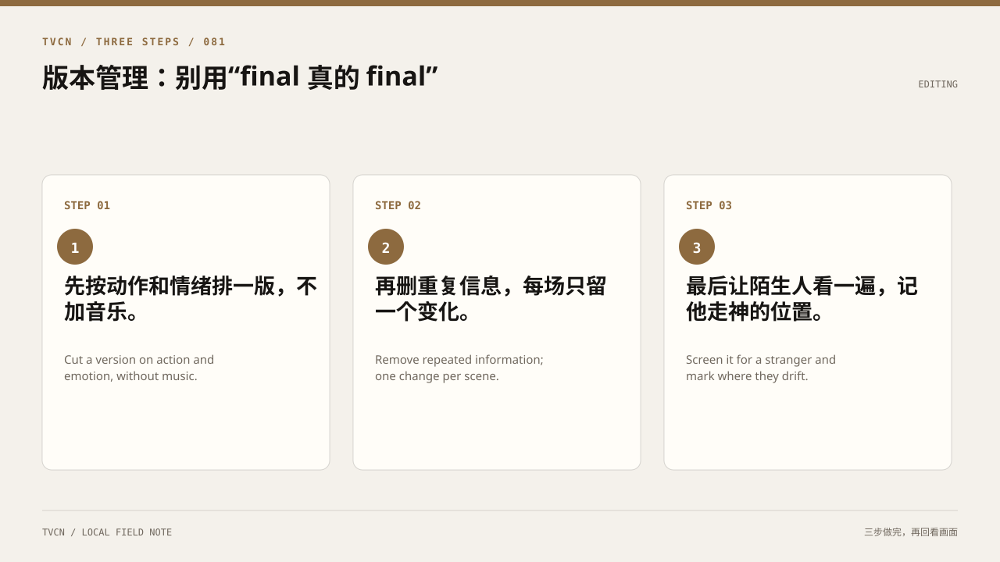

版本号只增不减，说明写“改了什么”
文件名用 v001、v002，不用“最终”“最终2”。每次输出写一行变更：改了哪一场、哪个镜头、为什么。没有变更说明，版本号只是数字。
只保留当前版和上一版在工作目录，旧版归档；交付时明确哪一版是母版，避免客户打开错文件。
边界
版本不是越多越好。每次改一个目的，改完立刻命名；一天出十个版本，等于没有版本。
现场
文件名用日期_平台_时长_v3，改动写进版本表：改了什么、为什么、谁批准。
DIAGRAM / Editing
三步流程

怎么做
- 文件名用日期_平台_时长_v3，例如 20261122_web_60s_v3。
- 改动写进版本表：改了什么、为什么、谁批准。
- 只保留一个当前交付版，旧版进归档，别靠记忆。
别踩
别用“最新版”当文件名；三个月后没人知道它最新在哪。
图片说明：本页封面、图解与步骤图是编辑示意或结构图，不是本页实测照片，也不能当作器材测试证据；AI 辅助生成的图会在图注标出。判断器材或画面，以正文的测试条件与现场记录为准。